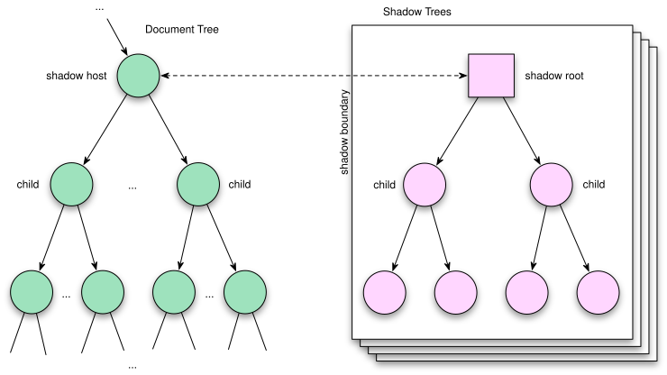

/me
Varunkumar Nagarajan
Once upon a time...
- Web was just a platform for creating interactive and navigable content
- HTML was used to define the static text and images
- JavaScript to control the interactions and animations
- CSS to present the content
- Capabilities on the browser were limited
- We need to depend on backend servers to accomplish most of the user tasks
Today's Web...
Powerful combo - HTML5, JS, CSS3
- Browsers are becoming powerful day by day
- Web apps of today are as powerful as native apps
- We can build complex web applications with richer contents
- We can
- Build apps which can work offline
- Access devices from our web apps
- Even have databases / complete file system on the client side
- Do real-time communication on the web and much more...
- Chrome experiments ★ Find your way to OZ
Thanks to HTML5, JS and CSS3, we can do amazing stuff on the web
With great power, comes great responsibility
Follow better engineering practices
Write code that is maintainable
The code must be
- Modular
- Encapsulated
- Re-usable
Build re-usable components
Any Object Oriented language will help us get there
How do we incorporate these on the web platform?
What's missing?
The fundamental problem is the lack of DOM encapsulation which could lead to
- Collision of DOM contents (ID collision)
- Broken styles
- Unexpected JavaScript behavior
Libraries work around these problems by following certain assumptions and conventions
Modularize the Web
MV* frameworks help us to some extent
- Organize the complexity
- Separate contents from the presentation layer
- Define Templates / views
- Associate a model with the view
- Monitor the model for changes and update the view (Data binding)
- Does it solve all the problems? Lets see.
 The templates of today
The templates of today
Method #1: "offscreen" DOM using [hidden] or display:none
<div id="mytemplate" hidden> <img src="logo.png"> <div class="comment"></div> </div>
- We're working directly w/ DOM.
- Resources are still loaded (e.g. that
<img>) - Other side-effects like URLs not being fully composed yet.
- Style and theming is painful.
- embedding page must scope all its CSS to
#mytemplate. - no guarantees on future naming collisions.
- embedding page must scope all its CSS to
The templates of today
Method #2: manipulating markup as string. Overload <script>:
<script id="mytemplate" type="text/x-handlebars-template"> <img src="logo.png"> <div class="comment"></div> </script>
- encourages run-time string parsing (via
.innerHTML)- may include user-supplied data → XSS attacks.
Examples: handlebars.js, John Resig's micro-template script
What do we have in JS space?
- JavaScript Object constructor and Module patterns
- Listening to changes
- Model - via Wrapper object. Dirty check
- View - via event handlers, DOM Mutation events - Not efficient
Encapsulation
Fundamental foundation of OOP
Separates code you wrote from the code that will consume it
We don't have it on the web!
Well, sort of:
<iframe>
<iframe> are heavy and restrictive. ★ Seamless iframe
Web components - The future?
Defining Web Components
key players
<template>- inert chunks of clonable DOM. Can be activated for later use
- Custom elements
- create new HTML elements - expand HTML's existing vocabulary.
- extend existing DOM objects with new imperative APIs
- Shadow DOM
- building blocks for encapsulation & boundaries inside of DOM
Defining Web Components
supporting cast
- Style encapsulation
- Knowledge into app's state
- DOM changes:
MutationObserver - Model changes:
Object.observe()
- DOM changes:
- CSS variables,
calc()
A collection of new capabilities on the browser
Web components - Templates
 Templating of the near future
Templating of the near future
<template>
Contains inert markup intended to be used later:
<template id="mytemplate"> <img src=""> <div class="comment"></div> </template>
- We're working directly w/ DOM again.
- Parsed, not rendered
<script>s don't run, images aren't loaded, media doesn't play, etc.
Templating of the near future
- Appending inert DOM to a node makes it go "live":
var t = document.querySelector('#mytemplate');
t.content.querySelector('img').src = 'http://...';
document.body.appendChild(t.content.cloneNode(true));
Web components - Shadow DOM
Shadow DOM
Is complex! Let's cover the basics:
- Concept of Shadow DOM
- Creating Shadow DOM
- Insertion Points
- Styling
- encapsulated styles & shadow boundaries
- styling hooks: using CSS variables
@hostat-rule
Turns out...
- DOM nodes can already "host" hidden DOM.
- It can't be accessed traversing the DOM.
So...browser vendor's have been holding out on us!
Shadow DOM
exposes the same internals browser vendors have been using to implement their native controls, to us
Attaching Shadow DOM to a host

Shadow tree is rendered instead

Creating Shadow DOM
<div id="host"> <h1>Varunkumar Nagarajan</h1> <h2>Hyderabad, India</h2> <div>...other content...</div> </div>
var host = document.querySelector('#host');
var shadow = host.createShadowRoot();
shadow.innerHTML = '<h2>Yo, you just got replaced!</h2>' +
'<div>Who? Varunkumar (@varunkumar)</div>';
// host.shadowRoot;
Varunkumar Nagarajan
Hyderabad, India
...other content...
Style encapsulation
<style>s defined in ShadowRoot are scoped.
var shadow = document.querySelector('#host').createShadowRoot();
shadow.innerHTML = '<style>h2 { color: red; }</style>' +
'<h2>Yo, you got replaced!</h2>' +
'<div>Who? Varunkumar (@varunkumar)</div>';
Varunkumar Nagarajan
Hyderabad, India
...other content...
Author's styles don't cross shadow boundary by default.
Change the behavior via properties resetStyleInheritance and applyAuthorStyles
Styling the host element (@host at-rule)
@hostselects the shadow host element.- Allows reacting to different states:
<style>
@host {
/* Gotcha: higher specificity than any selector,
lower specificity than declarations from a <style> attribute. */
* {
opacity: 0.2;
transition: opacity 400ms ease-in-out;
}
*:hover {
opacity: 1;
}
}
</style>
Varunkumar Nagarajan
Hyderabad, India
...other content...
Style hooks using CSS Variables
theming
Widget author includes variable placeholders:
button {
color: var(button-text-color);
font: var(button-font);
}
Widget embedder applies styles to the element:
#host {
var-button-text-color: green;
var-button-font: "Comic Sans MS", "Comic Sans", cursive;
}
Varunkumar Nagarajan
Hyderabad, India
...other content...
Remember our host node
<div id="host"> <h1>Varunkumar Nagarajan</h1> <h2>Hyderabad, India</h2> <div>...other content...</div> </div>
that guy rendered as:
<div id="host">
#shadow-root
<style>h2 {color: red;}</style>
<h2>Yo, you got replaced!</h2>
<div>Who? Varunkumar (@varunkumar)</div>
</div>
...everything was replaced when we attached the shadow DOM
Shadow DOM insertion points
funnels for host's children
Shadow DOM insertion points
funnels for host's children
<content>elements are insertion points.selectattribute uses CSS selectors to specify where children are funneled.
<div id="host"> <firstName>Varunkumar</firstName> <lastName>Nagarajan</lastName> <city>Hyderabad, India</city> <div>...other content...</div> </div>
<style>
h2 {color: red;}
</style>
<hgroup>
<h2><content select="firstName"></content>
(@varunkumar)</h2>
<content select="city"></content>
</hgroup>
<content select="*"></content>
...other content...
Web components - Observers
Mutation Observers
watch for changes in the DOM
- Defined in DOM4 ( Yep. We're on DOM4! )
- Observers, not listeners
- triggered by DOM changes rather than events (e.g.
oninput,click)
- triggered by DOM changes rather than events (e.g.
- Callback triggered at the end of DOM modifications.
- provided a list of all changes (
MutationRecords)
- provided a list of all changes (
- Replacement for
MutationEventperformance / stability bottlenecks. - Availability: Chrome, Safari, FF
Example
observe child node insertion/deletions
var observer = new MutationObserver(function(mutations, observer) {
mutations.forEach(function(record) {
for (var i = 0, node; node = record.addedNodes[i]; i++) {
console.log(node);
}
});
});
observer.observe(el, {
childList: true, // include childNode insertion/removals
//subtree: true, // observe the subtree root at el
//characterData: true, // include textContent changes
//attribute: true // include changes to attributes within the subtree
});
// observer.disconnect() // Stop observations
Mutation Observers vs. Mutation Events
MutationEvent
- Deprecated in DOM Events spec
- Adding listeners degrades app performance by 1.5-7x!
- slow because of event propagation and synchronous nature
- fire too often: every single change
- removing listener(s) doesn't reverse the damage
- Inconsistencies with browser implementations.
Don't use Mutation Events!
Comparison Example
// MutationEvent
document.addEventListener('DOMNodeInserted', function(e) {
console.log(e.target);
}, false);
// MutationObserver
var observer = new MutationObserver(function(mutations, observer) {
mutations.forEach(function(record) {
for (var i = 0, node; node = record.addedNodes[i]; i++) {
console.log(node);
}
});
}).observe(document, {childList: true});
Mutation Observers vs. Mutation Events
- MS Dhoni
- R Ashwin
- Shikar Dhawan
- Ashok Dinda
- Harbhajan Singh
- Ravindra Jadega
- Virat Kohli
- Bhuvneshwar Kumar
- Pragyan Ohja
- Cheteswar Pujara
- Ajinkya Rahane
- Virender Sehwag
- Ishant Sharma
- Sachin Tendulkar
- Murali Vijay
Object.observe()
watch changes to JS objects
Object.observe : JS objects :: MutationObserver : DOM
function observeChanges(changes) {
console.log('== Callback ==');
changes.forEach(function(change) {
console.log('What Changed?', change.name);
console.log('How did it change?', change.type);
console.log('What was the old value?', change.oldValue );
console.log('What is the present value?', change.object[change.name]);
});
}
var o = {};
Object.observe(o, observeChanges);
// Object.unobserve(o, observeChanges); // Stop watching.
- Get notified when a property is added, deleted, or its value changes.
- Get notified when properties are reconfigured (e.g.
Object.freeze) - Available in Chrome Canary. Turn on Experimental JavaScript APIs in
about:flags.
See Bocoup's writeup.
Custom Elements
Putting it all together
Do we have all the pieces to build components?
- Templates (
<template>) - Shadow DOM (
@host, styling hooks) - Mutation Observers,
Object.observe()
WE DO :)
Creating custom elements
Define a declarative "API" using insertion points:
<element name="x-tabs">
<template>
<style>...</style>
<content select="hgroup:first-child"></content>
</template>
</element>
Include and use it:
<link rel="components" href="x-tabs.html">
<x-tabs>
<hgroup>
<h2>Title</h2>
...
</hgroup>
</x-tabs>
Define an API
Define an imperative API:
<element name="x-tabs" constructor="TabsController">
<template>...</template>
<script>
TabsController.prototype = {
doSomething: function() { ... }
};
</script>
</element>
Declared constructor goes on global scope:
<link rel="components" href="x-tabs.html">
<script>
var tabs = new TabsController();
tabs.addEventListener('click', function(e) { e.target.doSomething(); });
document.body.appendChild(tabs);
</script>
Or, we can even extend existing elements
Don't forget to enable yourself...
- Use Chrome Canary
- Enable yourself:
- Enable experimental WebKit features in
about:flags - Enable experimental JavaScript in
about:flags - Enable Show Shadow DOM in DevTools
- Enable experimental WebKit features in
You don't have Shadow DOM enabled
You don't have Object.observe()
You don't have MutationObservers
Demo
<x-gangnam-style></x-gangnam-style>
( hover over the bar )
Polyfills
- Web-Components-Polyfill
- Mozilla's x-tags Custom Elements Polyfill (works on all browsers)
- MDV - code.google.com/p/mdv/
Resources
Web Components / Custom Elements
- Web Components Explainer explainer doc, Custom Elements spec
- Follow +Web Components ★ +Eric Bidelman ★ @dglazkov ★ +Dimitri Glazkov
- Public WebApps mailing list
Shadow DOM
- What the Heck is Shadow DOM?, Shadow DOM 101
- Shadow DOM spec
- Conformance test - demo.unipro.ru/shadow/
Mutation Observers / Object.observe
Thank you